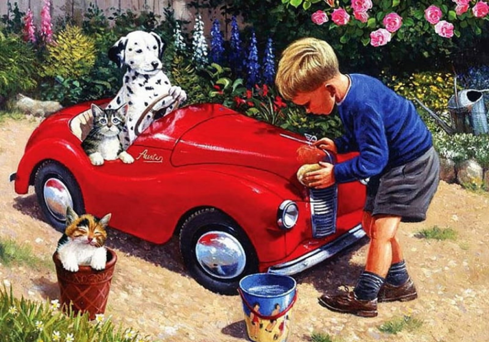
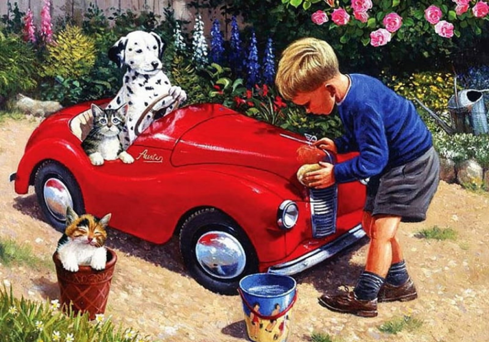

I love to fiddle with the tiny details of packaging design. You'll most likely find me on Twitter talking about design or photography or on Instagram where I post way too many photos of my beautiful cat #PrincessImre.
 

Pető László Krisztán
PetoLaszlopetz765
Apa | Köziglúzer | Tanuló
from